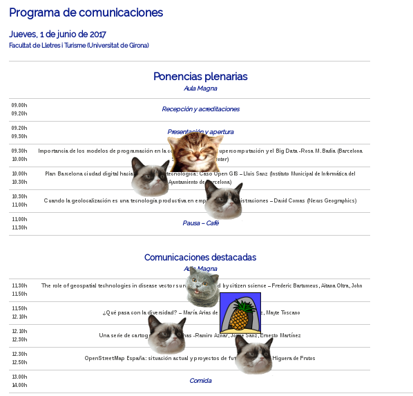
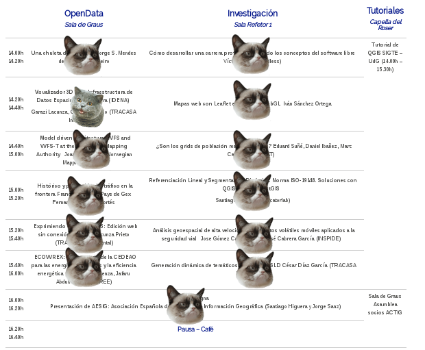
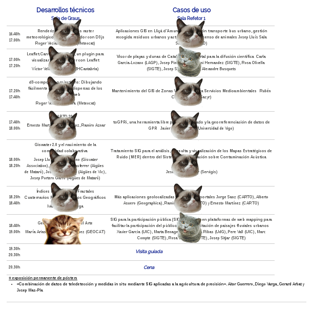
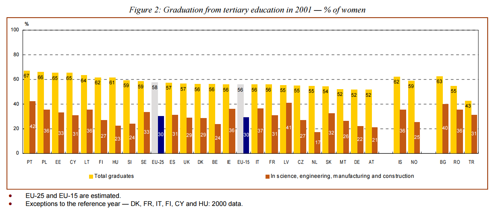
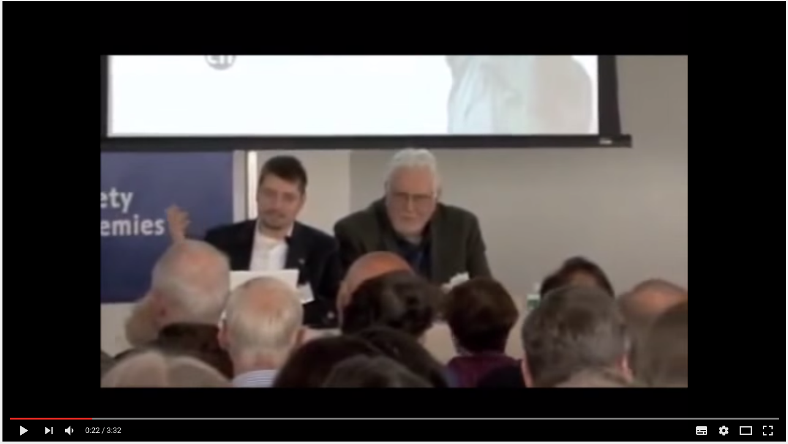
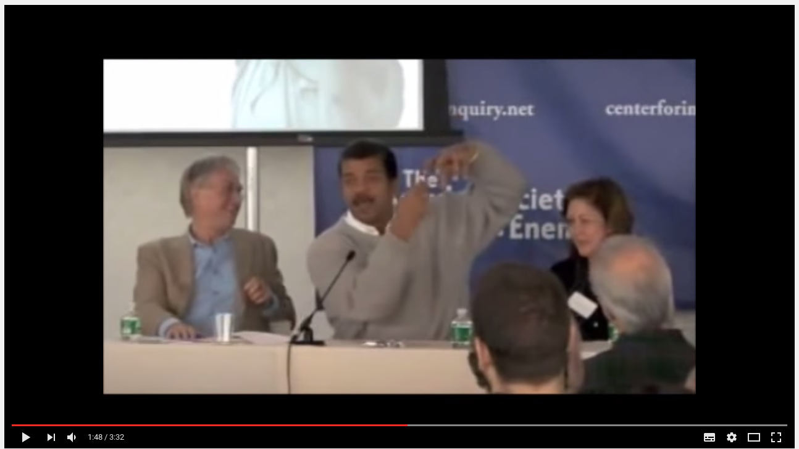
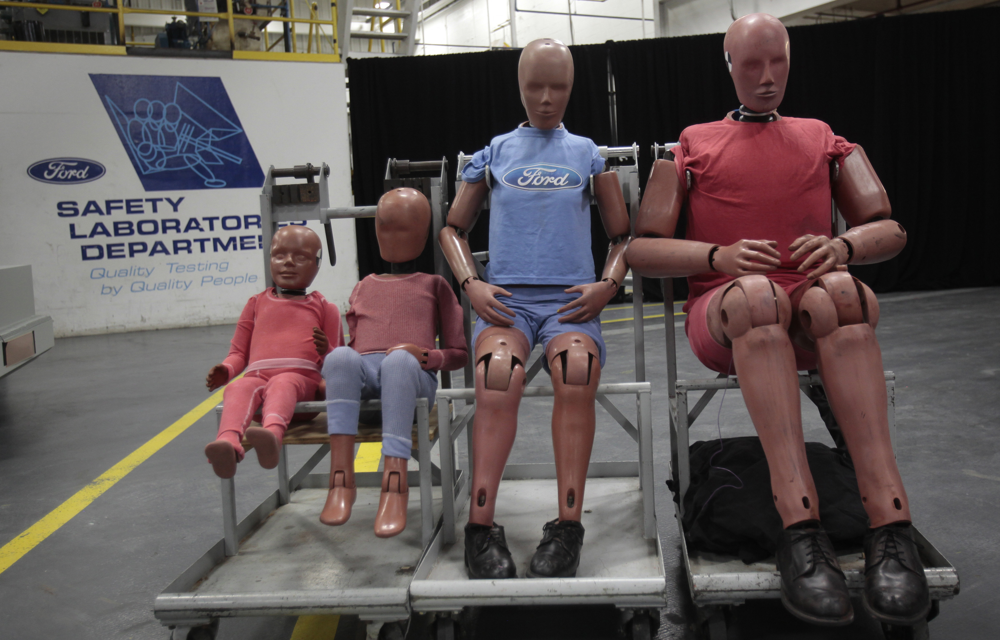

Ping a Programadoras
Who am I


me at a tech conference pic.twitter.com/XbHux754Rc
— pamela marie (@pwnela) September 28, 2015
The Bechdel test for tech conferences: 1) two women speaking 2) on the same panel 3) not about women in tech.
— Monica Rogati (@mrogati) November 15, 2015
SigLibre 2017
  “Women graduates are significantly under-represented in scientific and engineering disciplines: there are more men graduating in S&E than women in every country. ” ESTAT 2004
Science
&
Engineering
Architecture
&
Engineering
Women
&
Salaries
Fuente: IECA 2015
Fuente: El Mundo, Ministerio de Educación ESTAT, OCDE y Crue

Genetic or biological difference?
I have never been female but I have been black my whole life“My life experience tells me that when you don't find black men, women in the sciences... I know that these forces are real. And I had to survive in order to get where I am today. So before we start talking about genetic differences you got to come up with a system where there's equal oportunity. Then we can have that conversation.”Neil Degrasse Tyson
